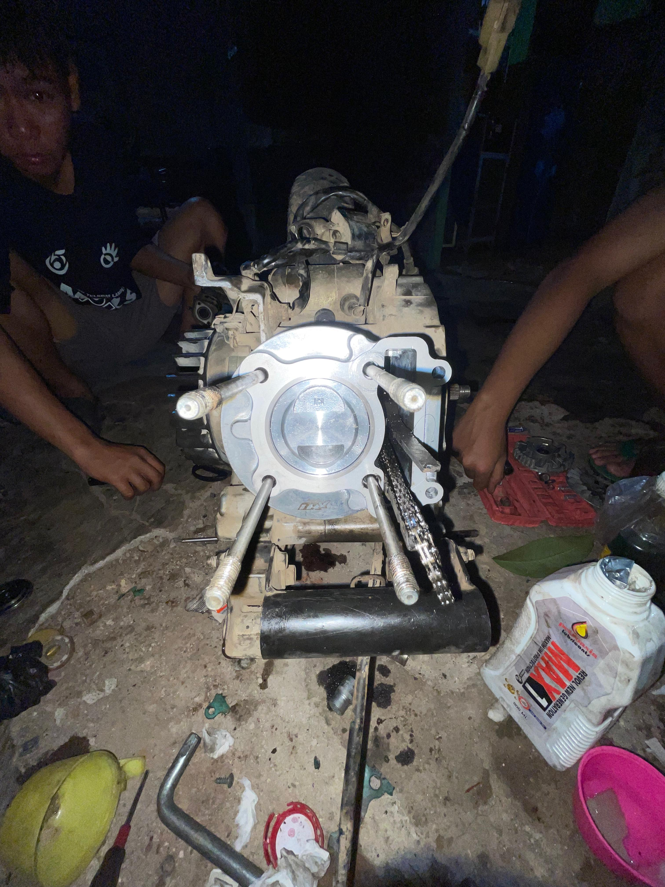
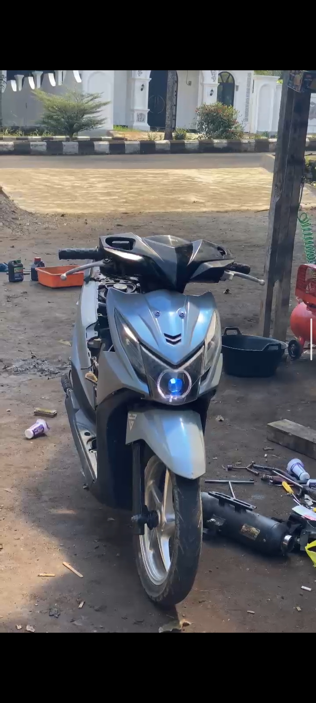

🔧 Mechanical Engineering
Halaman ini menampilkan ketertarikan saya di bidang mekanikal, khususnya mesin dan sepeda motor. Saya suka mempelajari cara kerja mesin, perawatan, dan modifikasi.
.

.

.
